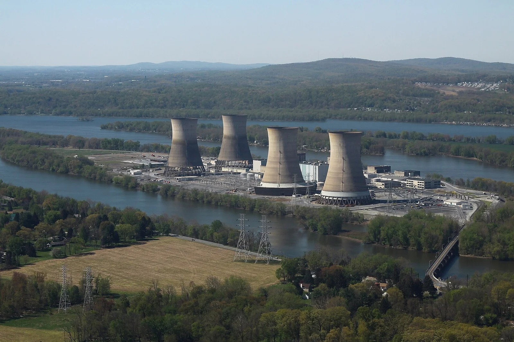
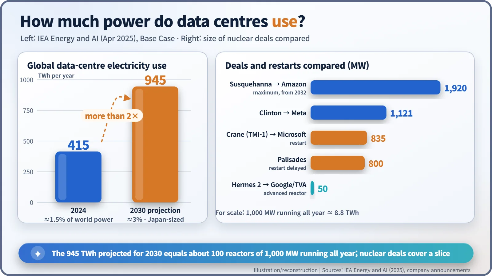
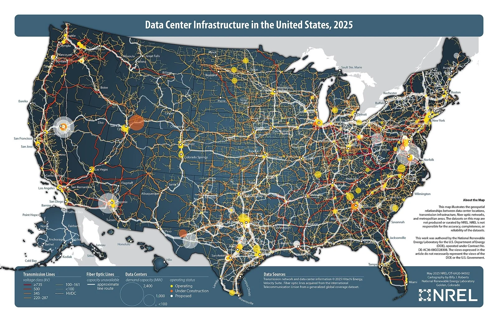
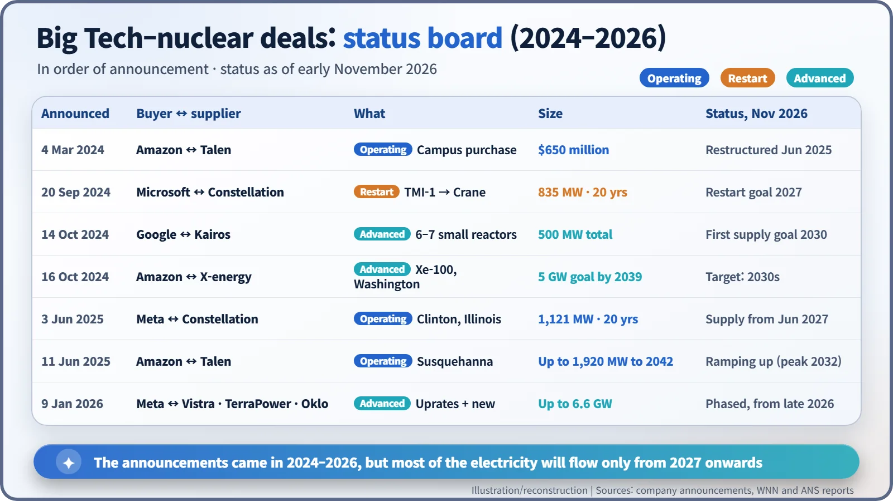
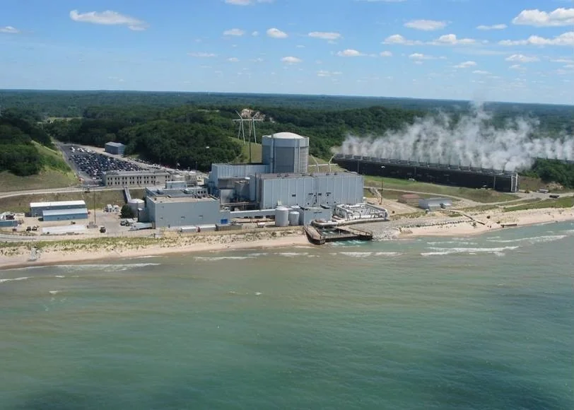

Nuclear History · 295
Same Date, Five Years Later: Data Centers, AI and the Return of Nuclear Power
Three Mile Island Unit 1 closed on 20 September 2019; exactly five years later Microsoft signed up to buy its power, one of a wave of Big Tech nuclear deals.
Three Mile Island Unit 1 closed for economic reasons on 20 September 2019; exactly five years later Microsoft signed up to buy its power if it restarts. Driven by AI, global data-center electricity use is projected by the IEA to more than double from about 415 TWh in 2024 to about 945 TWh in 2030, and Amazon, Google and Meta have signed nuclear deals of their own. As of November 2026, most of that electricity has yet to flow.
The same date, five years apart
At noon on 20 September 2019, Unit 1 at Three Mile Island in Pennsylvania stopped generating electricity. There had been no accident. The plant simply could not make money against cheap shale-gas power and had no state support. Exactly five years later, on 20 September 2024, came an announcement that the same reactor would run again. The customer lining up for its power was not a utility. It was Microsoft. [3]
The island is remembered for the 1979 accident at Unit 2. Unit 1 was a separate reactor: it restarted in 1985 and ran until 2019. What brought the word "restart" back to this site was an unexpected guest: artificial intelligence.

The electricity bill of computers that never sleep
A data center is a building full of servers. Generative AI changed the arithmetic. Training AI models and producing their answers keeps specialised chips running around the clock, and cooling them takes electricity too.
According to the International Energy Agency's special report Energy and AI, published on 10 April 2025, the world's data centers used about 415 TWh (terawatt-hours) in 2024, roughly 1.5% of global electricity consumption. In the IEA's Base Case, that more than doubles to about 945 TWh by 2030: nearly 3% of world electricity and about what Japan uses in a year today. Most of the growth comes from the United States and China. The IEA also published other scenarios in which the outcome shifts a lot depending on how fast efficiency improves, so 945 TWh is a projection, not a forecast set in stone. [1] [2]


Why Big Tech knocked on the reactor door
Big technology companies have pledged to run on carbon-free electricity. But data centers do not switch off at night or when the wind drops. A nuclear plant emits almost no carbon while running and produces steady power 24 hours a day, which is why it caught their eye. The deals came in three flavours.
1. Long-term contracts with operating plants
On 4 March 2024, Amazon Web Services bought a data-center campus built right next to Talen Energy's Susquehanna nuclear plant for $650 million. On 1 November 2024, however, the Federal Energy Regulatory Commission (FERC) voted 2–1 to reject a contract change that would have let the campus draw more of the plant's power directly, without going through the grid. Critics argued other customers would end up paying for the grid; supporters called it an efficient use of existing plants. In June 2025 the companies restructured the deal so that power flows through the grid: up to 1,920 MW until 2042. Meta signed a 20-year deal for 1,121 MW from the Clinton plant in Illinois on 3 June 2025, starting in June 2027. [4] [7]
2. Waking a closed plant
Microsoft's 20-year agreement with Constellation is the example here. The 835 MW Three Mile Island Unit 1 was renamed the Crane Clean Energy Center, and the US Department of Energy (DOE) approved a $1 billion loan in November 2025. As of November 2026 the target is a restart in 2027. [3]
3. Queueing for reactors that don't exist yet
In October 2024 Google teamed up with Kairos Power for a total of 500 MW from small advanced reactors by 2035, and Amazon backed X-energy with a goal of 5 GW by 2039. On 9 January 2026 Meta announced up to 6.6 GW, combining upgrades at existing plants with advanced reactors. Most of these deliveries are aimed at 2030 or later. [5]

A first restart, tested on the shore of Lake Michigan
No permanently closed US reactor had ever been brought back. The plant that came closest has nothing to do with Big Tech: Palisades in Michigan. It shut on 20 May 2022, was bought by Holtec, and pursued a restart backed by a DOE loan of about $1.52 billion, with a regional power cooperative lined up to buy the electricity.

In late August 2025 the plant returned to "operating" status on paper, but the target dates of late 2025 and February 2026 both slipped by. On 30 August 2026, just as fuel loading began, one fuel assembly came loose from the handling tool and lodged at a tilt inside the reactor vessel. Holtec said there was no radiological release and no one was harmed, but the incident only became public in late September and drew criticism. On 14 October the Nuclear Regulatory Commission (NRC) approved a one-time licence amendment to remove the assembly. As of early November 2026, no restart date had been set. [6] [8]
Between the announcement and the power line
An announcement is not a delivery. As of November 2026, neither restart plant is generating yet, and most advanced-reactor deals are aimed at the 2030s. The 945 TWh projected for 2030 is roughly what about 100 reactors of 1,000 MW would produce running all year, so nuclear contracts cover only part of it. The argument over who pays for the grid is still going on.
One change, though, is clear. For nearly 70 years, nuclear power's customers were utilities. Now the owners of computers that never sleep are sitting at the negotiating table themselves. Whether this new customer will also change how fast reactors get built is something the next few years of results will tell.